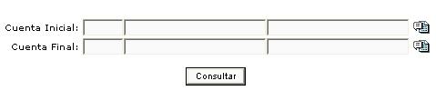

Permite ejecutar una consulta del catálogo de cuentas contables con la parametrización de un rango determinado de cuentas que el administrador decida consultar.

Figura 1. Cuentas contables.
Al no oprimir ninguna cuenta inicial y final, el portal le generará todas las cuentas del catálogo.
Figura 2. Reporte de consulta de cuentas